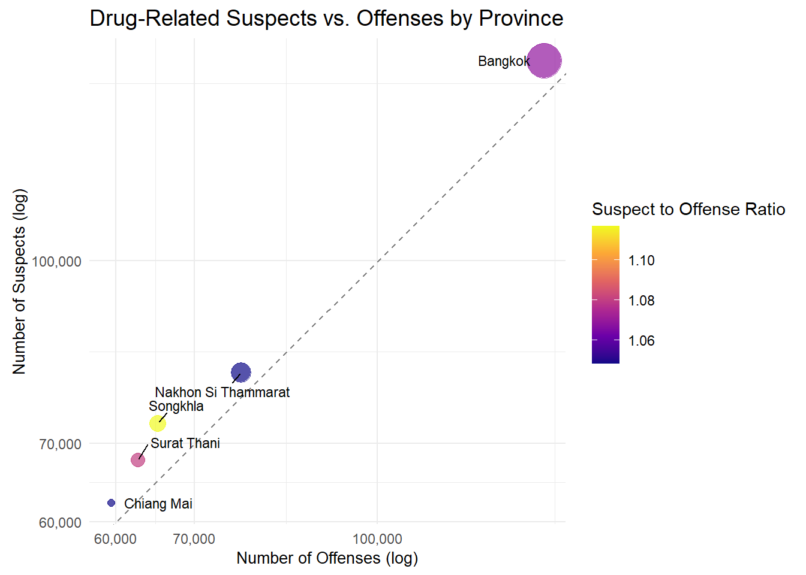

pacman::p_load(sf, tidyverse, knitr, viridis, patchwork, gridExtra, kableExtra, sfdep, tmap, tmaptools, patchwork, scales, gganimate, rayshader, spdep, ggrepel)Take Home Exercise 2: Thailand Drug Abuse
This exercise aims to analyze the spatial distribution of drug offenses in Thailand from 2017 to 2022. Geospatial analysis techniques will be employed to understand the patterns of drug offenses across provinces and identify any spatial clustering or autocorrelation in the data.
1.0 Introduction
2.0 Data Collection
2.1 Thailand Drug Offense Data
The dataset from Kaggle contains information on drug offenses in Thailand from 2017 to 2022. The original data is sourced from the Office of the Narcotics Control Board.
2.2 GIS Data
Relevant Geospatial data was gathered from Humanitarian Data Exchange (HDX)
3.0 Data Wrangling
3.1 Loading Packages
3.2 Loading Data
To aid in our analysis, two sets of data will be imported:
- Drug Offense Data: This Kaggle dataset examines statistics related to different types of drug offenses in Thailand, categorized by fiscal year. The data was sourced from the Office of the Narcotics Control Board.
- Provincial Boundary Data: These shapefiles from Humanitarian Data Exchange (HDX) contain the provincial boundaries of Thailand.
drug_offenses_unfiltered <- read_csv("data/aspatial/thai_drug_offenses_2017_2022.csv")Rows: 7392 Columns: 5
── Column specification ────────────────────────────────────────────────────────
Delimiter: ","
chr (3): types_of_drug_offenses, province_th, province_en
dbl (2): fiscal_year, no_cases
ℹ Use `spec()` to retrieve the full column specification for this data.
ℹ Specify the column types or set `show_col_types = FALSE` to quiet this message.Exploring the Drug Offenses Data
head(drug_offenses_unfiltered, n=10)# A tibble: 10 × 5
fiscal_year types_of_drug_offenses no_cases province_th province_en
<dbl> <chr> <dbl> <chr> <chr>
1 2017 drug_use_cases 11871 กรุงเทพมหานคร Bangkok
2 2017 drug_use_cases 200 ชัยนาท Chai Nat
3 2017 drug_use_cases 553 นนทบุรี Nonthaburi
4 2017 drug_use_cases 450 ปทุมธานี Pathum Thani
5 2017 drug_use_cases 378 พระนครศรีอยุธยา Phra Nakhon Si Ayu…
6 2017 drug_use_cases 727 ลพบุรี Loburi
7 2017 drug_use_cases 820 สมุทรปราการ Samut Prakan
8 2017 drug_use_cases 69 สระบุรี Saraburi
9 2017 drug_use_cases 127 สิงห์บุรี Sing Buri
10 2017 drug_use_cases 208 อ่างทอง Ang Thong A glimpse of the dataset reveals some interesting points. There are actually multiple types of drug offenses being examined here, though it definitely seems like the dominant type is drug_use_cases. We also have access to the number of cases for each province for fiscal years 2017 to 2022.
Loading Shapefiles
adm1_unfiltered <- st_read("data/adms", layer = "tha_admbnda_adm1_rtsd_20220121")Reading layer `tha_admbnda_adm1_rtsd_20220121' from data source
`C:\Users\yeoba\Desktop\bjyeo\IS415-GeospatialAnalytics\TakehomeEx\THE02\data\adms'
using driver `ESRI Shapefile'
Simple feature collection with 77 features and 16 fields
Geometry type: MULTIPOLYGON
Dimension: XY
Bounding box: xmin: 97.34336 ymin: 5.613038 xmax: 105.637 ymax: 20.46507
Geodetic CRS: WGS 84We check if there are any missing rows for our our drug offenses dataset. Thankfully, it seems like there aren’t any.
all_filled <- all(!is.na(drug_offenses_unfiltered$province_th) & !is.na(drug_offenses_unfiltered$province_en))
print(all_filled)[1] TRUEdrug_offenses <- drug_offenses_unfiltered %>%
mutate(province_en = case_when(
province_en == "buogkan" ~ "Bueng Kan",
province_en == "Loburi" ~ "Lop Buri",
TRUE ~ province_en
))drug_offenses <- drug_offenses %>% select(-province_th)
adm1 <- adm1_unfiltered %>% select(-ADM1_TH, -ADM1ALT1TH, -ADM1ALT2TH, -ADM0_TH,
-ADM0_EN, -ADM1ALT1EN, -ADM1ALT2EN)province_totals <- drug_offenses %>%
group_by(province_en) %>%
summarize(total_cases = sum(no_cases, na.rm = TRUE))
adm1_data <- adm1 %>%
left_join(province_totals, by = c("ADM1_EN" = "province_en"))3.3 Exploratory Data Analysis
Overall Map
The choropleth map of Thailand below shows the distribution of drug use cases across provinces. The color intensity represents the number of cases, with darker shades indicating higher numbers.
choropleth_map <- ggplot(adm1_data) +
geom_sf(aes(fill = total_cases)) +
scale_fill_viridis(
option = "plasma",
name = "Number of Cases",
trans = "log10",
breaks = scales::breaks_log(n = 5),
labels = scales::label_number(accuracy = 1)
) +
theme_minimal() +
labs(
title = "Drug Use Cases in Thailand (2017-2022)",
subtitle = "Distribution across provinces"
) +
theme(
plot.title = element_text(size = 16, face = "bold", hjust = 0.5),
plot.title.position = "plot",
plot.subtitle = element_text(size = 12, hjust = 0.5),
legend.position = "right",
axis.text.x = element_text(angle = 45, hjust = 1),
panel.grid.major = element_line(color = "white")
)
print(choropleth_map)Key Observations:
- The Northern and Northeastern provinces of Thailand exhibit a notably higher concentration of drug use cases. Border provinces often face more significant challenges related to cross-border drug trafficking, which could explain the concentration.
- While the Northern and parts of Central Thailand display the highest number of cases, the Southern provinces and a few other parts of the country have a considerably lower concentration of cases.
Drug Offenses by Fiscal Year
Next, we want to visualize how the number of drug offenses has evolved over the years. This line plot will help us identify any trends or patterns in the data.
yearly_totals <- drug_offenses %>%
group_by(fiscal_year) %>%
summarize(total_cases = sum(no_cases, na.rm = TRUE))
temporal_plot <- ggplot(yearly_totals, aes(x = fiscal_year, y = total_cases)) +
geom_line(aes(group = 1), color = "blue", alpha = 0.7) +
geom_point(color = "blue", size = 3) +
geom_smooth(aes(group = 1), formula = y ~ x, method = "loess", se = TRUE,
color = "red", fill = "pink", alpha = 0.3, linewidth = 1.2) +
labs(title = "Trend of Drug Offense Cases in Thailand (2017-2022)",
x = "Year", y = "Number of Cases") +
theme_minimal() +
theme(
axis.text.x = element_text(angle = 45, hjust = 1),
axis.title = element_text(size = 12),
legend.position = "none"
) +
scale_y_continuous(labels = scales::comma) +
scale_x_continuous(breaks = seq(min(yearly_totals$fiscal_year), max(yearly_totals$fiscal_year), by = 1))
print(temporal_plot)Key Observations:
The number of drug offense cases in Thailand has exhibited a fluctuating pattern between 2017 and 2022. The graph shows an overall upward trend until 2021, followed by a significant drop in 2022.
Animated Choropleth Map
yearly_province_totals <- drug_offenses %>%
group_by(province_en, fiscal_year) %>%
summarize(total_cases = sum(no_cases, na.rm = TRUE), .groups = 'drop')
adm1_data_yearly <- adm1 %>%
left_join(yearly_province_totals, by = c("ADM1_EN" = "province_en"))
animated_choropleth <- ggplot(adm1_data_yearly) +
geom_sf(aes(fill = total_cases)) +
scale_fill_viridis_c(
option = "plasma",
name = "Number of Cases",
trans = "log10",
breaks = scales::breaks_log(n = 5),
labels = scales::label_number(accuracy = 1)
) +
theme_minimal() +
labs(
title = "Drug Use Cases in Thailand",
subtitle = "Fiscal Year: {current_frame}"
) +
theme(
plot.title = element_text(size = 16, face = "bold", hjust = 0.5),
plot.subtitle = element_text(size = 14, hjust = 0.5),
legend.position = "right",
axis.text.x = element_blank(),
axis.text.y = element_blank(),
axis.ticks = element_blank(),
panel.grid = element_blank()
) +
gganimate::transition_manual(fiscal_year) +
gganimate::ease_aes('linear')
# animated_choropleth_render <- gganimate::animate(animated_choropleth,
# nframes = length(unique(adm1_data_yearly$fiscal_year)),
# fps = 1,
# width = 800,
# height = 600)
#
# gganimate::anim_save("animated_choropleth_drug_offenses.gif", animated_choropleth_render)Key Observations:
The animated choropleth map provides a dynamic visualization of how drug offenses have evolved across provinces in Thailand from 2017 to 2022. The fluctuating patterns and changes in the intensity of cases over the years are clearly visible. In particular, 2019 and 2021 are where the two peaks of drug offenses are observed.
Highest Drug Offense Cases by Province
We’ve seen the overall distribution of drug offenses. Let’s now take a more focused approach and identify the provinces with the highest number of drug offense cases.
province_totals <- drug_offenses %>%
group_by(province_en) %>%
summarize(total_cases = sum(no_cases, na.rm = TRUE)) %>%
arrange(desc(total_cases)) %>%
top_n(15, total_cases)
bar_chart <- ggplot(province_totals, aes(x = reorder(province_en, total_cases), y = total_cases, fill = total_cases)) +
geom_bar(stat = "identity") +
coord_flip() +
scale_fill_viridis(option = "D", direction = -1) +
labs(
title = "Top 15 Provinces with Highest Drug Offense Cases",
x = "Province",
y = "Total Number of Cases",
fill = "Total Cases"
) +
theme_minimal() +
theme(
axis.text.y = element_text(size = 8)
) +
scale_y_continuous(labels = scales::comma)
print(bar_chart)
Key Observations:
- Bangkok has the highest number of drug offense cases by a significant margin. This is likely due to its high population density, and its role as a major hub for transportation, trade, and organized crime activities.
- The southern provinces of Nakhon Si Thammarat and Songkhla also report high numbers of drug offenses. These provinces might experience high drug-related activity due to their geographic location near drug trafficking routes, particularly in the south where drug smuggling may be more prevalent.
- Many of the provinces with high numbers of drug offenses, such as Surat Thani, Chon Buri, and Samut Prakan, are located in central and southern Thailand. This could suggest these regions are hotspots for drug-related activity, possibly due to their access to ports, highways, and urban centers that facilitate drug distribution.
Examining Types of Drug Offenses
Earlier, we noticed that there are multiple types of drug offenses in the dataset. Let’s explore the different types of drug offenses and their distribution across provinces. But first, we need to conduct some data preprocessing; the offense types are a little awkwardly named in the original dataset, and thus somewhat difficult to interpret.
offense_names <- c(
"conspiracy_cases" = "Conspiracy",
"drug_use_cases" = "Drug Use",
"export_cases" = "Export",
"import_cases" = "Import",
"possession_cases" = "Possession",
"possession_with_intent_to_distribute_cases" = "Possession with Intent to Distribute",
"production_cases" = "Production",
"trafficking_cases" = "Trafficking"
)
rename_suspects <- function(x) {
ifelse(
str_starts(x, "suspects_in_"),
paste0("Suspects (", offense_names[str_remove(x, "suspects_in_")], ")"),
x
)
}
drug_offenses_cleaned <- drug_offenses %>%
mutate(
types_of_drug_offenses = case_when(
types_of_drug_offenses %in% names(offense_names) ~ offense_names[types_of_drug_offenses],
TRUE ~ types_of_drug_offenses
),
types_of_drug_offenses = rename_suspects(types_of_drug_offenses)
)
unique_offenses <- unique(drug_offenses_cleaned$types_of_drug_offenses)
print("Updated Types of Drug Offenses:")[1] "Updated Types of Drug Offenses:"for (offense in sort(unique_offenses)) {
print(offense)
}[1] "Conspiracy"
[1] "Drug Use"
[1] "Export"
[1] "Import"
[1] "Possession"
[1] "Possession with Intent to Distribute"
[1] "Production"
[1] "Suspects (Conspiracy)"
[1] "Suspects (Drug Use)"
[1] "Suspects (Export)"
[1] "Suspects (Import)"
[1] "Suspects (Possession with Intent to Distribute)"
[1] "Suspects (Possession)"
[1] "Suspects (Production)"
[1] "Suspects (Trafficking)"
[1] "Trafficking"Distribution of Drug Offenses by Type
We explore the distribution of drug offenses by type.
offense_types_summary <- drug_offenses_cleaned %>%
filter(!grepl("^Suspects", types_of_drug_offenses)) %>%
group_by(types_of_drug_offenses) %>%
summarize(total_cases = sum(no_cases, na.rm = TRUE)) %>%
arrange(desc(total_cases))
# Create bar graph
bar_graph <- ggplot(offense_types_summary, aes(x = reorder(types_of_drug_offenses, -total_cases), y = total_cases, fill = total_cases)) +
geom_bar(stat = "identity") +
scale_fill_viridis_c(option = "viridis") +
labs(
title = "Types of Drug Offenses in Thailand",
x = "Type of Offense",
y = "Total Number of Cases",
fill = "Total Cases"
) +
theme_minimal() +
theme(
axis.text.x = element_text(angle = 45, hjust = 1),
plot.title = element_text(size = 14),
legend.position = "right"
) +
scale_y_continuous(labels = scales::comma)
print(bar_graph)Key Observations:
Of the types of drug offenses, Drug Use and Possession are the most common offenses reported in Thailand. Whereas, Trafficking and Production offenses are less frequent. This distribution suggests that there are more people involved in the consumption and possession of drugs than in the production and trafficking of drugs.
Top Drug Offenses Across Years
Let’s examine how the numbers for drug use and possession have evolved across the years.
top_3_offenses <- drug_offenses_cleaned %>%
filter(!grepl("^Suspects", types_of_drug_offenses)) %>%
group_by(types_of_drug_offenses) %>%
summarize(total_cases = sum(no_cases, na.rm = TRUE)) %>%
top_n(3, total_cases) %>%
pull(types_of_drug_offenses)
yearly_top_3_offenses <- drug_offenses_cleaned %>%
filter(types_of_drug_offenses %in% top_3_offenses) %>%
group_by(fiscal_year, types_of_drug_offenses) %>%
summarize(total_cases = sum(no_cases, na.rm = TRUE), .groups = 'drop')
line_chart <- ggplot(yearly_top_3_offenses, aes(x = fiscal_year, y = total_cases, color = types_of_drug_offenses)) +
geom_line(linewidth = 1) +
geom_point(size = 3) +
scale_color_viridis_d(option = "viridis") +
labs(
title = "Top 3 Types of Drug Offenses Across Years",
x = "Fiscal Year",
y = "Total Number of Cases",
color = "Type of Offense"
) +
theme_minimal() +
theme(
plot.title = element_text(size = 14),
legend.position = "bottom"
) +
scale_y_continuous(labels = scales::comma)
print(line_chart)Key Observations:
- Drug Use cases have consistently been the most prevalent type of drug offense across all years. There are two noticeable peaks in 2019 and 2021, which is congruent with the overall trend of drug offenses we observed earlier.
- Possession cases have shown a gradual general decline over the years. This could indicate a shift in law enforcement focus or changes in drug-related activities in the country.
- Possession with Intent to Distribute cases have remained relatively stable over the years, with a significant decrease in 2022. This type of drug offense is less common, which is expected given the nature of the offense.
Scatter-Plot Analysis: Suspects vs. Offenses
Let’s not forget that in our data, we also have access to the number of suspects for each type of drug offense. We can utilize that data to create a scatter plot that compares the number of suspects to the number of offenses across provinces.
plot_data <- drug_offenses_cleaned %>%
group_by(province_en, types_of_drug_offenses) %>%
summarize(total_cases = sum(no_cases, na.rm = TRUE), .groups = 'drop') %>%
mutate(
category = if_else(str_starts(types_of_drug_offenses, "Suspects"), "Suspects", "Offenses"),
base_offense = if_else(
str_starts(types_of_drug_offenses, "Suspects"),
str_remove(types_of_drug_offenses, "Suspects \\(|\\)"),
types_of_drug_offenses
)
) %>%
pivot_wider(
names_from = category,
values_from = total_cases,
values_fill = list(total_cases = 0)
) %>%
group_by(province_en) %>%
summarize(
Suspects = sum(Suspects, na.rm = TRUE),
Offenses = sum(Offenses, na.rm = TRUE)
) %>%
mutate(Total = Suspects + Offenses) %>%
top_n(5, Total)
scatter_plot <- ggplot(plot_data, aes(x = Offenses, y = Suspects)) +
geom_point(aes(size = Offenses + Suspects, color = Suspects / Offenses), alpha = 0.7) +
geom_abline(slope = 1, intercept = 0, linetype = "dashed", color = "gray50") +
geom_text_repel(
aes(label = province_en),
size = 3,
max.overlaps = 10,
box.padding = 0.5
) +
scale_x_log10(labels = scales::comma_format()) +
scale_y_log10(labels = scales::comma_format()) +
scale_size_continuous(range = c(2, 10), guide = "none") +
scale_color_viridis_c(option = "plasma", name = "Suspect to Offense Ratio") +
labs(
title = "Drug-Related Suspects vs. Offenses by Province",
x = "Number of Offenses (log)",
y = "Number of Suspects (log)"
) +
theme_minimal() +
theme(
legend.position = "right",
plot.title = element_text(size = 14),
axis.title = element_text(size = 10)
) +
coord_equal()
print(scatter_plot)
Key Observations:
- Points above the line: The top five provinces are all located above the dashed line. This indicates that in each of these provinces, the number of drug-related suspects exceeds the number of drug offenses. In other words, for each reported offense, more than one individual is implicated or suspected.
- Potential multi-suspect cases: Since the number of suspects is higher than the number of offenses, it can be inferred that many drug-related cases involve multiple individuals working together. This could suggest a pattern of drug offenses that are often collaborative in nature, such as trafficking, distribution rings, or group involvement in drug use or sales.
- Bangkok’s Prominent Role: Bangkok shows the highest number of both suspects and offenses, with a considerable lead over other provinces. This reinforces the idea that drug-related activities in Bangkok are substantial and likely involve more organized criminal groups with multiple participants per offense.
4.0 Global Measures of Spatial Autocorrelation (GMSA)
4.1 Methodology
Before we proceed with the analysis, let’s outline the steps we will follow:
- Temporal Focus: As shown in the graphs earlier, there are 2 significant peaks in drug offenses in 2019 and 2021. We will also be considering the first year, 2017 to observe the trend over the years.
- Drug Offense Types: We will focus on the total number of drug offenses across provinces for each year. This prevents us from having tunnel-vision on a specific type of drug offense.
4.2 Distribution of Drug Offenses
We start by plotting the choropleth maps for the selected years (2017, 2019, 2021) to visualize the distribution of drug offenses across provinces.
selected_years <- c(2017, 2019, 2021)drug_offenses_2017 <- drug_offenses_cleaned %>%
filter(fiscal_year == 2017) %>%
group_by(province_en) %>%
summarize(total_cases = sum(no_cases, na.rm = TRUE))map_2017_data <- adm1 %>%
left_join(drug_offenses_2017, by = c("ADM1_EN" = "province_en"))
map_2017 <- tm_shape(map_2017_data) +
tm_fill("total_cases", title = "Number of Cases", style = "quantile") +
tm_borders() +
tm_layout(title = "Drug Offenses in Thailand (2017)",
legend.outside = TRUE)
map_2017drug_offenses_2019 <- drug_offenses_cleaned %>%
filter(fiscal_year == 2019) %>%
group_by(province_en) %>%
summarize(total_cases = sum(no_cases, na.rm = TRUE))map_2019_data <- adm1 %>%
left_join(drug_offenses_2019, by = c("ADM1_EN" = "province_en"))
map_2019 <- tm_shape(map_2019_data) +
tm_fill("total_cases", title = "Number of Cases", style = "quantile") +
tm_borders() +
tm_layout(title = "Drug Offenses in Thailand (2019)",
legend.outside = TRUE)
map_2019drug_offenses_2021 <- drug_offenses_cleaned %>%
filter(fiscal_year == 2021) %>%
group_by(province_en) %>%
summarize(total_cases = sum(no_cases, na.rm = TRUE))map_2021_data <- adm1 %>%
left_join(drug_offenses_2021, by = c("ADM1_EN" = "province_en"))
map_2021 <- tm_shape(map_2021_data) +
tm_fill("total_cases", title = "Number of Cases", style = "quantile") +
tm_borders() +
tm_layout(title = "Drug Offenses in Thailand (2021)",
legend.outside = TRUE)
map_2021
Key Observations on Drug Offenses in Thailand (2017, 2019, 2021):
- General Temporal Trends:
- 2017: The initial distribution of drug offenses shows a more moderate concentration across the country, with fewer provinces experiencing very high levels of offenses. The highest concentrations appear in southern Thailand and central regions near Bangkok.
- 2019: By 2019, the overall number of drug offenses seems to have risen significantly in certain provinces, particularly in the southern and northeastern regions are more prevalent than in 2017. The central region, near Bangkok, also shows increased activity.
- 2021: In 2021, drug offenses remain highly concentrated, but there appears to be some redistribution. The northeastern region continues to show a high number of offenses, while some provinces that were less affected in 2017 are now more heavily impacted. Interestingly, southern Thailand still shows persistent high levels of offenses.
- Regional Consistencies:
- Southern Thailand: Throughout all three years, southern Thailand consistently shows high levels of drug offenses. Provinces like Surat Thani, Nakhon Si Thammarat, and areas in the deep south maintain their darker colors across the years, indicating a persistent issue with drug-related activities. This suggests a long-standing problem with either drug trafficking or local demand in this region.
- Central Thailand and Bangkok Area: The provinces surrounding Bangkok maintain moderate to high drug offense levels, indicating that the capital and its surrounding areas are key hubs for drug-related activities.
- Northeastern Region: The northeastern provinces remain consistently problematic.
- Notable Shifts:
- 2019 Spike: The 2019 map shows a noticeable increase in drug offenses compared to 2017. More provinces in the northeast, central, and southern regions see elevated cases of drug offenses.
- 2021 Redistribution: By 2021, while drug offenses remain high, there are some noticeable shifts. Some central provinces that showed higher concentrations in 2019 seem to experience a slight decrease by 2021. However, the northeastern and southern regions remain heavily impacted.
4.3 Moran’s I Analysis
Moran’s I is a measure of spatial autocorrelation that evaluates whether the values of a variable are clustered, dispersed, or randomly distributed across space. It ranges from -1 (dispersed) to 1 (clustered) with 0 indicating spatial randomness.
First, a seed is set for reproducibility.
set.seed(42)Next, we define a function to correct any missing neighbors in the spatial data. Then, we calculate the Moran’s I statistic and perform a Monte Carlo simulation to test the null hypothesis of spatial randomness.
correct_neighbors <- function(map_data, fiscal_year) {
suppressWarnings(
nb <- st_contiguity(map_data)
)
no_neighbors <- which(sapply(nb, function(x) length(x) == 1 && x[1] == 0))
cat(fiscal_year, "- Observations with no neighbors:", no_neighbors, "\n")
if (length(no_neighbors) > 0) {
distances <- st_distance(map_data)
find_nearest <- function(dist_vector) {
sorted_indices <- order(dist_vector)
return(sorted_indices[2])
}
nearest_neighbors <- sapply(no_neighbors, function(i) find_nearest(distances[i,]))
for (i in seq_along(no_neighbors)) {
nb[[no_neighbors[i]]] <- nearest_neighbors[i]
}
cat(fiscal_year, "- Nearest neighbors assigned to observations:", no_neighbors, "\n")
cat(fiscal_year, "- Assigned nearest neighbors:", nearest_neighbors, "\n")
} else {
cat(fiscal_year, "- All observations have neighbors. No corrections needed.\n")
}
return(nb)
}
calculate_morans_i <- function(map_data, nb) {
weights <- st_weights(nb, allow_zero = TRUE)
map_data$total_cases <- as.numeric(map_data$total_cases)
moranI <- global_moran_test(map_data$total_cases, nb, weights, zero.policy = TRUE)
global_moran <- global_moran_perm(map_data$total_cases, nb, weights, nsim = 999)
return(list(moranI = moranI, global_moran = global_moran))
}
process_year <- function(year, drug_offenses_cleaned, adm1) {
drug_offenses_year <- drug_offenses_cleaned %>%
filter(fiscal_year == year) %>%
group_by(province_en) %>%
summarize(total_cases = sum(no_cases, na.rm = TRUE))
map_data <- adm1 %>%
left_join(drug_offenses_year, by = c("ADM1_EN" = "province_en"))
map_data <- st_as_sf(map_data)
nb_corrected <- correct_neighbors(map_data, year)
moranI_result <- calculate_morans_i(map_data, nb_corrected)
return(list(map_data = map_data, moranI = moranI_result))
}
years <- c(2017, 2019, 2021)
results <- lapply(years, function(year) {
result <- process_year(year, drug_offenses_cleaned, adm1)
cat("\nResults for year", year, ":\n")
print(result$moranI$moranI)
print(result$moranI$global_moran)
return(result)
})2017 - Observations with no neighbors: 67
2017 - Nearest neighbors assigned to observations: 67
2017 - Assigned nearest neighbors: 66
Results for year 2017 :
Moran I test under randomisation
data: x
weights: listw
Moran I statistic standard deviate = 2.3717, p-value = 0.008853
alternative hypothesis: greater
sample estimates:
Moran I statistic Expectation Variance
0.128902086 -0.013157895 0.003587702
Monte-Carlo simulation of Moran I
data: x
weights: listw
number of simulations + 1: 1000
statistic = 0.1289, observed rank = 979, p-value = 0.042
alternative hypothesis: two.sided
2019 - Observations with no neighbors: 67
2019 - Nearest neighbors assigned to observations: 67
2019 - Assigned nearest neighbors: 66
Results for year 2019 :
Moran I test under randomisation
data: x
weights: listw
Moran I statistic standard deviate = 2.4244, p-value = 0.007668
alternative hypothesis: greater
sample estimates:
Moran I statistic Expectation Variance
0.151582766 -0.013157895 0.004617477
Monte-Carlo simulation of Moran I
data: x
weights: listw
number of simulations + 1: 1000
statistic = 0.15158, observed rank = 977, p-value = 0.046
alternative hypothesis: two.sided
2021 - Observations with no neighbors: 67
2021 - Nearest neighbors assigned to observations: 67
2021 - Assigned nearest neighbors: 66
Results for year 2021 :
Moran I test under randomisation
data: x
weights: listw
Moran I statistic standard deviate = 2.767, p-value = 0.002829
alternative hypothesis: greater
sample estimates:
Moran I statistic Expectation Variance
0.195767388 -0.013157895 0.005701229
Monte-Carlo simulation of Moran I
data: x
weights: listw
number of simulations + 1: 1000
statistic = 0.19577, observed rank = 989, p-value = 0.022
alternative hypothesis: two.sidedKey Observations:
Year 2017 Results
- Moran’s I statistic: 0.1289
- P-value (test under randomization): 0.0089
- Monte Carlo p-value: 0.042
Conclusion: For 2017, the positive Moran’s I (0.1289) indicates moderate spatial clustering of drug offenses. The significant p-values (both under randomization and Monte Carlo) suggest that this clustering is not due to random chance, meaning provinces with similar levels of drug offenses tend to be geographically close.
Year 2019 Results
- Moran’s I statistic: 0.1516
- P-value (test under randomization): 0.0077
- Monte Carlo p-value: 0.046
Conclusion: In 2019, the Moran’s I increased to 0.1516, indicating a slightly stronger spatial clustering of drug offenses compared to 2017. Again, the significant p-values suggest that the clustering is statistically significant and not random. This indicates that provinces with higher drug offenses were more clustered in 2019 than in 2017.
Year 2021 Results
- Moran’s I statistic: 0.1958
- P-value (test under randomization): 0.0028
- Monte Carlo p-value: 0.022
Conclusion: By 2021, Moran’s I reached 0.1958, showing an even stronger degree of spatial clustering of drug offenses. The p-values are highly significant, meaning the clustering is strong and consistent. This suggests that by 2021, drug offenses in Thailand were even more spatially concentrated, with neighboring provinces experiencing similar levels of drug offenses.
Overall Insights
- Increasing Spatial Clustering: The Moran’s I statistic shows a consistent increase in spatial clustering of drug offenses from 2017 to 2021. This suggests that over time, drug offenses became more geographically concentrated, with neighboring provinces increasingly experiencing similar levels of offenses.
- Statistical Significance: In all three years, the p-values from both the Moran’s I test and Monte Carlo simulation are below 0.05, indicating that the observed spatial autocorrelation is statistically significant. This means that the clustering of drug offenses across provinces is not random but follows a discernible spatial pattern.
- Policy Implications: The growing spatial clustering implies that drug offenses are becoming more localized or regionalized. Policymakers and law enforcement agencies might need to focus on regional interventions, particularly in hotspot clusters, to effectively combat drug-related issues.
Hypothesis Testing
We define two hypothesis for our analysis:
- Null Hypothesis (\(H_o\)): There is no spatial autocorrelation (spatial randomness)
- Alternative Hypothesis (\(H_1\)): There is positive spatial autocorrelation (greater than spatial randomness)
The results from 2017, 2019, and 2021 consistently reject the null hypothesis, confirming the presence of spatial autocorrelation.
4.4 Visualization of Results
We’ve performed the Moran’s I analysis for 2017, 2019, and 2021. Let’s visualize the results using histograms of the Monte Carlo simulations and choropleth maps of drug offenses by province for each year.
Combined Monte-Carlo and Choropleth Plots
create_mc_histogram <- function(global_moran, year) {
sim_data <- data.frame(sim = global_moran$res)
obs_value <- global_moran$statistic
ggplot(sim_data, aes(x = sim)) +
geom_histogram(bins = 30, fill = "lightblue", color = "black") +
geom_vline(aes(xintercept = obs_value), color = "red", linetype = "dashed", size = 1) +
labs(title = paste("Monte Carlo Simulation -", year),
x = "Moran's I", y = "Frequency") +
theme_minimal() +
theme(plot.title = element_text(size = 12))
}
create_choropleth <- function(map_data, year) {
ggplot(map_data) +
geom_sf(aes(fill = total_cases), color = "white", size = 0.2) +
scale_fill_viridis_c(option = "plasma", trans = "log",
name = "Total Cases\n(log scale)",
labels = scales::comma) +
labs(title = paste("Drug Offenses by Province -", year)) +
theme_minimal() +
theme(legend.position = "right",
plot.title = element_text(size = 12))
}
for (i in seq_along(years)) {
year <- years[i]
result <- results[[i]]
mc_hist <- create_mc_histogram(result$moranI$global_moran, year)
choro_map <- create_choropleth(result$map_data, year)
combined_plot <- mc_hist + choro_map +
plot_layout(ncol = 2, widths = c(2, 3)) +
plot_annotation(
title = paste("Moran's I Analysis for", year),
theme = theme(plot.title = element_text(size = 16, face = "bold", hjust = 0.5))
) &
theme(plot.margin = margin(t = 20, r = 10, b = 10, l = 10, unit = "pt"))
print(combined_plot)
}Warning: Using `size` aesthetic for lines was deprecated in ggplot2 3.4.0.
ℹ Please use `linewidth` instead.
Interpretation of Results:
Year 2017:
- Monte Carlo: The observed Moran’s I (0.1289) falls significantly to the right of the simulated distribution, suggesting that the spatial clustering of drug offenses in 2017 is higher than what would be expected by random chance. The Monte Carlo p-value (0.042) supports this, confirming spatial autocorrelation is present.
- Choropleth Map: The map shows provinces in the northern, central, and southern regions of Thailand with the highest concentrations of drug offenses. Notably, Bangkok and some southern provinces stand out as hotspots.
Year 2019:
- Monte Carlo: The observed Moran’s I (0.1516) is slightly higher than in 2017, with the red dashed line further to the right, indicating stronger spatial autocorrelation. The p-value (0.046) confirms that the clustering is statistically significant.
- Choropleth Map: The distribution of drug offenses in 2019 shows a similar pattern to 2017, with more intense clustering in certain northern and central regions. There appears to be a slight increase in cases across northeastern provinces, indicating a growing concentration of offenses.
Year 2021:
- Monte Carlo: The Moran’s I value (0.1958) is even higher than in 2019, with the red dashed line clearly separated from the main distribution of simulated values. The p-value (0.022) demonstrates stronger evidence of spatial clustering.
- Choropleth Map: The map for 2021 shows that the clustering of drug offenses has intensified, particularly in the northeastern and southern regions. The same key provinces remain prominent, but more areas are experiencing high levels of drug offenses, particularly along Thailand’s borders.
Trend of Moran’s I Over Years
moran_i_trend <- data.frame(
Year = years,
MoransI = sapply(results, function(r) r$moranI$moranI$statistic),
Pvalue = sapply(results, function(r) r$moranI$moranI$p.value)
)
y_range <- range(moran_i_trend$MoransI)
y_padding <- diff(y_range) * 0.1
improved_trend_chart <- ggplot(moran_i_trend, aes(x = Year, y = MoransI)) +
geom_line(size = 1, color = "blue") +
geom_point(size = 4, color = "red") +
geom_text(aes(label = sprintf("%.3f\n(p=%.3f)", MoransI, Pvalue)),
vjust = -1.5, hjust = 0.5, size = 3.5) +
scale_x_continuous(breaks = years) +
scale_y_continuous(limits = c(y_range[1] - y_padding, y_range[2] + y_padding * 3),
labels = scales::label_number(accuracy = 0.001)) +
labs(title = "Trend of Moran's I Over Years",
x = "Year",
y = "Moran's I Statistic") +
theme_minimal() +
theme(
plot.title = element_text(size = 16, face = "bold"),
axis.title = element_text(size = 12),
axis.text = element_text(size = 10),
panel.grid.minor = element_blank()
)
print(improved_trend_chart)Key Observations:
The main takeaway from the trend analysis is the consistent increase in Moran’s I statistic over the years. This upward trend indicates that spatial autocorrelation of drug offenses has become stronger over time. A higher Moran’s I statistic suggests that provinces with similar levels of drug offenses have become more geographically clustered, and not due to random chance.
5.0 Local Measures of Spatial Autocorrelation (LMSA)
Moving on from the global perspective, we will now delve into the local spatial autocorrelation of drug offenses in Thailand. We will use the Local Moran’s I statistic to identify spatial clusters of high or low drug offenses at the provincial level.
5.1 Local Moran’s I
Local Moran’s I is a local measure of spatial autocorrelation that evaluates the clustering of similar values in neighboring areas. It provides insights into the spatial patterns of drug offenses at the local level, identifying provinces with significant spatial clustering.
We start by defining a function to create LISA cluster maps for each year (2017, 2019, 2021) and visualize the local spatial autocorrelation of drug offenses.
create_lisa_map <- function(map_data, year) {
ggplot(map_data) +
geom_sf(aes(fill = lisa_cluster), color = "white", size = 0.1) +
scale_fill_manual(
values = c("High-High" = "#D7191C", "Low-Low" = "#2C7BB6",
"Low-High" = "#ABD9E9", "High-Low" = "#FDAE61",
"Not Significant" = "grey75"),
na.value = "grey50",
name = "LISA Cluster Type",
drop = FALSE
) +
theme_minimal() +
labs(
title = "LISA Cluster Map of Drug Abuse Cases in Thailand",
subtitle = paste("Local Moran's I -", year)
) +
theme(
plot.title = element_text(size = 16, face = "bold", hjust = 0.5),
plot.subtitle = element_text(size = 12, hjust = 0.5),
legend.position = "right",
legend.text = element_text(size = 8),
axis.text = element_blank(),
axis.ticks = element_blank(),
panel.grid = element_blank(),
panel.background = element_rect(fill = "aliceblue")
)
}
years <- c(2017, 2019, 2021)
map_data_list <- list(map_2017_data, map_2019_data, map_2021_data)
for (i in 1:length(years)) {
year <- years[i]
map_data <- map_data_list[[i]]
cat("\nProcessing year:", year, "\n")
nb <- st_contiguity(map_data)
weights <- st_weights(nb, allow_zero = TRUE)
map_data$total_cases <- as.numeric(map_data$total_cases)
local_moran_results <- local_moran(
map_data$total_cases,
nb,
weights,
nsim = 999,
zero.policy = TRUE
)
map_data <- map_data %>%
mutate(
local_moran_i = local_moran_results$Ii,
local_moran_p = local_moran_results$p_folded_sim,
local_moran_z = local_moran_results$Z.Ii
)
map_data <- map_data %>%
mutate(
case_lag = st_lag(total_cases, nb, weights),
case_scale = scale(total_cases),
lag_scale = scale(case_lag),
lisa_cluster = case_when(
local_moran_p > 0.05 ~ "Not Significant",
case_scale > 0 & lag_scale > 0 ~ "High-High",
case_scale < 0 & lag_scale < 0 ~ "Low-Low",
case_scale > 0 & lag_scale < 0 ~ "High-Low",
case_scale < 0 & lag_scale > 0 ~ "Low-High"
)
)
lisa_map <- create_lisa_map(map_data, year)
print(lisa_map)
cat("Summary of LISA clusters for", year, ":\n")
print(table(map_data$lisa_cluster))
cat("\n")
assign(paste0("local_moran_", year), list(
map_data = map_data,
local_moran_results = local_moran_results
))
}
Processing year: 2017 Warning in spdep::poly2nb(geometry, queen = queen, ...): some observations have no neighbours;
if this seems unexpected, try increasing the snap argument.Warning in spdep::poly2nb(geometry, queen = queen, ...): neighbour object has 2 sub-graphs;
if this sub-graph count seems unexpected, try increasing the snap argument.Warning: There was 1 warning in `stopifnot()`.
ℹ In argument: `case_lag = st_lag(total_cases, nb, weights)`.
Caused by warning in `spdep::lag.listw()`:
! NAs in lagged valuesSummary of LISA clusters for 2017 :
High-High Low-High Low-Low Not Significant
5 1 8 62
Processing year: 2019 Warning in spdep::poly2nb(geometry, queen = queen, ...): some observations have no neighbours;
if this seems unexpected, try increasing the snap argument.Warning in spdep::poly2nb(geometry, queen = queen, ...): neighbour object has 2 sub-graphs;
if this sub-graph count seems unexpected, try increasing the snap argument.Warning: There was 1 warning in `stopifnot()`.
ℹ In argument: `case_lag = st_lag(total_cases, nb, weights)`.
Caused by warning in `spdep::lag.listw()`:
! NAs in lagged valuesSummary of LISA clusters for 2019 :
High-High Low-High Low-Low Not Significant
3 3 4 66
Processing year: 2021 Warning in spdep::poly2nb(geometry, queen = queen, ...): some observations have no neighbours;
if this seems unexpected, try increasing the snap argument.Warning in spdep::poly2nb(geometry, queen = queen, ...): neighbour object has 2 sub-graphs;
if this sub-graph count seems unexpected, try increasing the snap argument.Warning: There was 1 warning in `stopifnot()`.
ℹ In argument: `case_lag = st_lag(total_cases, nb, weights)`.
Caused by warning in `spdep::lag.listw()`:
! NAs in lagged valuesSummary of LISA clusters for 2021 :
High-High Low-High Low-Low Not Significant
2 2 10 62 General Observations:
- High-High Clusters: These regions are hotspots of drug offenses with high values surrounded by other high values. In 2017, there are 5 high-high clusters, concentrated around Bangkok and neighboring provinces, as well as a small concentration in southern Thailand. In 2019, the high-high clusters have reduced to 3 provinces, with the cluster near Bangkok shrinking, though the southern cluster persists. By 2021, only 2 provinces remain in the high-high category. The southern provinces remain a significant hotspot, showing persistent high levels of drug abuse.
- Low-Low Clusters: Areas with low levels of drug abuse and are surrounded by other low-level provinces are considered coldspots. In 2017, there are 8 low-low clusters, mostly located in the northern and northeastern regions of Thailand. By 2019, the number of low-low clusters drops to 4 provinces, indicating a reduction in coldspots, though they remain in the same regions. However, by 2021, the number of low-low clusters rises again to 10 provinces, spread across the same general northern and northeastern regions.
- High-Low and Low-High Clusters: These clusters represent areas with high values surrounded by low values and vice versa. The presence of these clusters indicates a mix of high and low drug abuse levels in neighboring provinces. The number of high-low and low-high clusters fluctuates across the years, suggesting changes in the spatial distribution of drug offenses.
Observable Trends:
- Decreasing High-High Clusters: The number of high-high clusters decreases over time, with a notable reduction near Bangkok. However, the southern region remains consistently problematic, suggesting that while some regions are improving, others continue to struggle with high levels of drug abuse.
- Stable Low-Low Clusters: Northern and northeastern provinces have consistently shown lower levels of drug abuse, with more provinces joining the low-low cluster in 2021. This stability suggests that these regions are relatively unaffected by the drug abuse crisis compared to other parts of the country.
- Persistence of Southern Hotspots: The southern provinces, specifically around Phuket and nearby provinces, have consistently shown high levels of drug abuse.
5.2 Trend Analysis of Local Moran’s I
Let’s shift the focus from the Local Moran’s I over the years to the individual provinces. We will create a line plot to visualize the trend of Local Moran’s I for the top 5 provinces with the highest average Local Moran’s I values.
create_local_moran_trend <- function(data_list, top_n = 5) {
combined_data <- bind_rows(
lapply(seq_along(data_list), function(i) {
data.frame(
ADM1_EN = data_list[[i]]$map_data$ADM1_EN,
local_moran_i = data_list[[i]]$local_moran_results$ii,
year = years[i]
)
})
)
top_provinces <- combined_data %>%
group_by(ADM1_EN) %>%
summarize(avg_local_moran = mean(local_moran_i, na.rm = TRUE)) %>%
top_n(top_n, avg_local_moran) %>%
pull(ADM1_EN)
ggplot(combined_data %>% filter(ADM1_EN %in% top_provinces),
aes(x = year, y = local_moran_i, color = ADM1_EN, group = ADM1_EN)) +
geom_line() +
geom_point() +
labs(title = paste("Trend of Local Moran's I for Top", top_n, "Provinces"),
x = "Year", y = "Local Moran's I",
color = "Province") +
theme_minimal() +
theme(legend.position = "right")
}
data_list <- list(local_moran_2017, local_moran_2019, local_moran_2021)
trend_plot <- create_local_moran_trend(data_list)
print(trend_plot)General Observations:
- Bangkok’s Absence: Bangkok, a notable hotspot for drug activity, is notably absent from the top 5 provinces based on Local Moran’s I. This indicates that drug abuse issues in Bangkok may be more isolated or self-contained rather than spatially linked to surrounding regions.
- Focus Shifting to Other Provinces: The top 5 provinces shown here may have relatively lower overall numbers of offenses than Bangkok, but the spatial clustering in these regions is stronger. This points to regional patterns of drug abuse that are concentrated and linked to neighboring provinces in ways that are not as apparent in Bangkok.
Provincial Analysis:
- Central Provinces: Samut Prakan stands out amongst the other 4 provinces, as it is the only one with a very sharp spike in 2019 with its Local Moran’s I rising significantly before dropping back in 2021. This indicates a sudden, strong spatial clustering of drug offenses during 2019, possibly due to a regional incident or change in trafficking patterns.
- Southern Provinces: Nakhon Si Thammarat, Surat Thani, and Songkhla are prominent in the analysis, reinforcing the idea that southern Thailand is a critical region for drug-related activities and spatial clustering. This region’s consistent appearance in spatial analyses indicates that drug offenses in the south are highly regionalized and should be a priority for targeted interventions.
- Absence of Northern Provinces: Interestingly, no northern provinces are represented in the top 5 based on Local Moran’s I, suggesting that the drug offense patterns in the north are not as spatially clustered with their neighbors, despite being consistently low in total cases.
5.3 Hotspot and Coldspot Analysis
The Gi* statistic (Getis-Ord Gi*) is used to identify local clusters of high and low values in the data, helping us detect hotspots (high values) and cold spots (low values) for drug abuse across Thailand.
The p-value maps indicate the statistical significance of these clusters, showing where the Gi* values are most likely not due to random chance.
create_gi_star_and_pvalue_plots <- function(map_data, nb, weights, year) {
suppressWarnings(
gi_stars <- local_g_perm(
map_data$total_cases,
nb,
weights,
nsim = 999
)
)
map_data$gi_star <- gi_stars$gi
map_data$p_value <- gi_stars$p_folded_sim
gi_plot <- ggplot(map_data) +
geom_sf(aes(fill = gi_star), color = "white", size = 0.1) +
scale_fill_gradient2(
low = "blue", mid = "white", high = "red",
midpoint = 0, name = "Gi*",
limits = c(min(map_data$gi_star), max(map_data$gi_star))
) +
theme_minimal() +
labs(title = paste("Gi* Statistic -", year)) +
theme(
legend.position = "right",
legend.key.height = unit(1, "cm"),
legend.text = element_text(size = 8),
axis.text = element_blank(),
axis.ticks = element_blank(),
panel.grid = element_blank(),
plot.margin = margin(5, 5, 5, 5)
)
p_plot <- ggplot(map_data) +
geom_sf(aes(fill = cut(p_value, breaks = c(0, 0.001, 0.01, 0.05, 1),
labels = c("<= 0.001", "<= 0.01", "<= 0.05", "Not sig"))),
color = "white", size = 0.1) +
scale_fill_manual(
values = c("#d7191c", "#fdae61", "#ffffbf", "#2c7bb6"),
name = "p-value"
) +
theme_minimal() +
labs(title = paste("p-value of Gi* -", year)) +
theme(
legend.position = "right",
legend.key.height = unit(1, "cm"),
legend.text = element_text(size = 8),
legend.title = element_text(size = 10),
axis.text = element_blank(),
axis.ticks = element_blank(),
panel.grid = element_blank(),
plot.margin = margin(5, 5, 5, 5)
)
combined_plot <- gi_plot + p_plot +
plot_layout(ncol = 2, widths = c(1, 1.2)) +
plot_annotation(
title = paste("Gi* and p-value Analysis of Drug Abuse Cases in Thailand -", year),
theme = theme(plot.title = element_text(size = 14, face = "bold", hjust = 0.5))
)
return(combined_plot)
}
for (i in seq_along(years)) {
year <- years[i]
data <- get(paste0("local_moran_", year))
plot <- create_gi_star_and_pvalue_plots(data$map_data, nb, weights, year)
print(plot)
}General Observations:
- Gi* Statistic:
- 2017: In 2017, Bangkok and nearby central provinces show the highest Gi* values, indicating a strong cluster of drug abuse in this area. The southern provinces also show elevated Gi* values, indicating another emerging hotspot in the south. Some provinces in northern Thailand show relatively low Gi* values, suggesting potential cold spots for drug abuse.
- 2019: The Bangkok region remains a hotspot, and southern provinces continue to show high Gi* values, indicating persistent clustering of drug abuse cases in these areas. More central provinces are now involved in this cluster, suggesting an expansion of the problem. Northern provinces maintain their low Gi* values, reinforcing their cold spot status.
- 2021: The southern provinces around Phuket and Surat Thani show the strongest Gi values*, now becoming the most significant hotspot. Bangkok’s influence seems to have decreased slightly, though it remains significant. The north of Thailand shows increasingly low Gi values*, reinforcing its position as a cold spot for drug abuse cases.
- p-value Analysis:
- 2017: In 2017, the Bangkok region and nearby provinces exhibit a highly significant hotspot (p ≤ 0.01), confirming that the clustering in this region is unlikely to be due to chance. Central Thailand shows some expansion of this significant cluster.
- 2019: By 2019, the significant hotspot in the Bangkok region persists, while the southern region is now showing moderate significance (p ≤ 0.05), suggesting it is emerging as a more prominent hotspot.
- 2021: In 2021, southern Thailand becomes the most significant hotspot for drug abuse (p ≤ 0.001), with the Bangkok region maintaining significance but slightly lower compared to the south. Central Thailand also remains significant, but with a reduced footprint. Most northern regions are now non-significant.
Trend Analysis:
- Shift of Hotspots: Over time, there has been a shift in significant hotspots from Bangkok and central Thailand in 2017 to the southern provinces by 2021.
- Persistent Cold Spots in Northern Thailand: Across all three years, northern provinces consistently show low Gi* values and non-significant p-values. This reinforces that drug abuse is less of a problem in the north, with fewer clusters of high drug abuse activity.
- Emerging Central Region Influence: Central Thailand, particularly the provinces surrounding Bangkok, show a consistent presence of significant clustering, though the intensity fluctuates. This suggests that drug abuse issues in central Thailand are more persistent and widespread.
- Critical Southern Region: The southern provinces, particularly those around Phuket and Surat Thani, have emerged as the most critical region for drug abuse by 2021, with statistically significant clusters. From a law enforcement perspective, this represents a key area for targeted interventions.
5.4 Identification of Hotspots and Coldspots
To better understand the consistent hotspots and coldspots across the years, we will identify provinces that have consistently shown high or low clustering of drug offenses. We will then visualize these consistent spots on a map to highlight the regions that have remained problematic or less affected over time.
identify_hot_cold_spots <- function(local_moran_data, year) {
map_data <- local_moran_data$map_data
moran_results <- local_moran_data$local_moran_results
combined_data <- cbind(map_data, moran_results)
hot_spots <- combined_data %>%
filter(lisa_cluster == "High-High" & p_folded_sim <= 0.05) %>%
arrange(desc(ii)) %>%
pull(ADM1_EN)
cold_spots <- combined_data %>%
filter(lisa_cluster == "Low-Low" & p_folded_sim <= 0.05) %>%
arrange(ii) %>%
pull(ADM1_EN)
cat("\nYear:", year, "\n")
cat("Hot Spots (High-High clusters):", paste(hot_spots, collapse = ", "), "\n")
cat("Cold Spots (Low-Low clusters):", paste(cold_spots, collapse = ", "), "\n\n")
return(list(hot_spots = hot_spots, cold_spots = cold_spots))
}
all_spots <- list()
for (year in years) {
data <- get(paste0("local_moran_", year))
spots <- identify_hot_cold_spots(data, year)
all_spots[[as.character(year)]] <- spots
}
Year: 2017
Hot Spots (High-High clusters): Samut Prakan, Chachoengsao, Nakhon Pathom, Pathum Thani, Nonthaburi
Cold Spots (Low-Low clusters): Suphan Buri, Phrae, Nakhon Sawan, Kamphaeng Phet, Phitsanulok, Sukhothai, Uttaradit, Chai Nat
Year: 2019
Hot Spots (High-High clusters): Samut Prakan, Pathum Thani, Nonthaburi
Cold Spots (Low-Low clusters): Kamphaeng Phet, Phitsanulok, Nakhon Sawan, Chai Nat
Year: 2021
Hot Spots (High-High clusters): Nakhon Si Thammarat, Samut Prakan
Cold Spots (Low-Low clusters): Nakhon Sawan, Suphan Buri, Kamphaeng Phet, Kanchanaburi, Ratchaburi, Sing Buri, Phetchaburi, Chai Nat, Uthai Thani, Samut Songkhram find_consistent_spots <- function(all_spots, years) {
consistent_hot <- Reduce(intersect, lapply(years, function(y) all_spots[[as.character(y)]]$hot_spots))
consistent_cold <- Reduce(intersect, lapply(years, function(y) all_spots[[as.character(y)]]$cold_spots))
cat("Consistent Hot Spots across all years:", paste(consistent_hot, collapse = ", "), "\n")
cat("Consistent Cold Spots across all years:", paste(consistent_cold, collapse = ", "), "\n")
}find_consistent_spots(all_spots, years)Consistent Hot Spots across all years: Samut Prakan
Consistent Cold Spots across all years: Nakhon Sawan, Kamphaeng Phet, Chai Nat visualize_consistent_spots <- function(map_data, consistent_hot, consistent_cold) {
map_data$consistent_spots <- case_when(
map_data$ADM1_EN %in% consistent_hot ~ "Hot Spot",
map_data$ADM1_EN %in% consistent_cold ~ "Cold Spot",
TRUE ~ "Not Consistent"
)
ggplot(map_data) +
geom_sf(aes(fill = consistent_spots), color = "white", size = 0.1) +
scale_fill_manual(
values = c("Hot Spot" = "red", "Cold Spot" = "blue", "Not Consistent" = "grey"),
name = "Consistent Spots"
) +
theme_minimal() +
labs(title = "Consistent Hot and Cold Spots (2017-2021)") +
theme(
legend.position = "right",
axis.text = element_blank(),
axis.ticks = element_blank(),
panel.grid = element_blank()
)
}
recent_map_data <- local_moran_2021$map_data
consistent_hot <- all_spots[["2021"]]$hot_spots
consistent_cold <- all_spots[["2021"]]$cold_spots
print(visualize_consistent_spots(recent_map_data, consistent_hot, consistent_cold))Key Observations:
- Persistent Hot Spot: Samut Prakan is the only province that has consistently been a hot spot for drug abuse across all three years (2017, 2019, and 2021).
- Cold Spot Stability: The provinces of Suphan Buri, Nakhon Sawan, and Chai Nat have consistently low drug abuse rates. These provinces may offer insights into successful strategies for keeping drug abuse under control.
- Shift in Hot Spots: In 2017, the hot spots included multiple provinces in central Thailand but by 2021, the focus has shifted primarily to the southern province of Nakhon Si Thammarat. This shift highlights a changing landscape of drug abuse problems over time, where southern Thailand is becoming a more critical area for attention in 2021.
- Expansion of Cold Spots: In 2021, cold spots have expanded, particularly in the western and central provinces. This suggests that drug abuse is being controlled effectively in more regions over time, leading to the expansion of areas with consistently low drug abuse rates.
6.0 Bonus:
7.0 Conclusion
The analysis of the spatial distribution of drug offenses in Thailand provides valuable insights into the regional patterns and clustering of drug abuse cases. By utilizing spatial autocorrelation techniques such as Moran’s I, LISA, and Gi* statistics, we were able to identify hotspots, cold spots, and consistent clusters of drug offenses across the country.
- Temporal Trends: The analysis revealed a consistent increase in spatial clustering of drug offenses over the years, with certain regions showing persistent high levels of drug abuse. The southern provinces, in particular, emerged as a critical hotspot for drug-related activities.
- Regional Consistencies: Southern Thailand, central provinces around Bangkok, and the northeastern region consistently showed high levels of drug offenses. These areas require targeted interventions to address the drug abuse crisis effectively.
- Policy Implications: The identification of hotspots and cold spots can inform policymakers and law enforcement agencies about the spatial distribution of drug offenses. By focusing on regions with high clustering, authorities can implement targeted strategies to combat drug trafficking and abuse effectively.
- Future Directions: Further research could explore the underlying factors contributing to the spatial clustering of drug offenses, such as socio-economic conditions, law enforcement strategies, and drug trafficking routes. Understanding these factors can help develop more effective policies to address the drug abuse crisis in Thailand.
We can also conclude from our hypotheses that the spatial distribution of drug offenses in Thailand is not random but exhibits significant clustering patterns. The presence of spatial autocorrelation indicates that provinces with similar levels of drug offenses tend to be geographically close, suggesting underlying factors contributing to the spatial clustering of drug abuse.
References
- Claude AI. (n.d.). Claude AI. https://claude.ai/